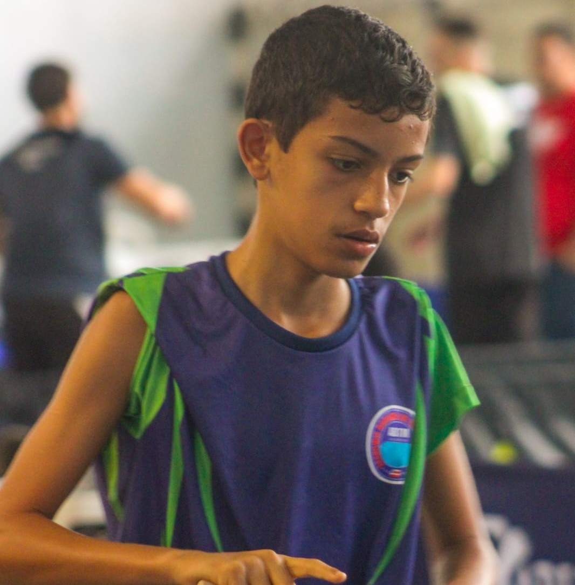
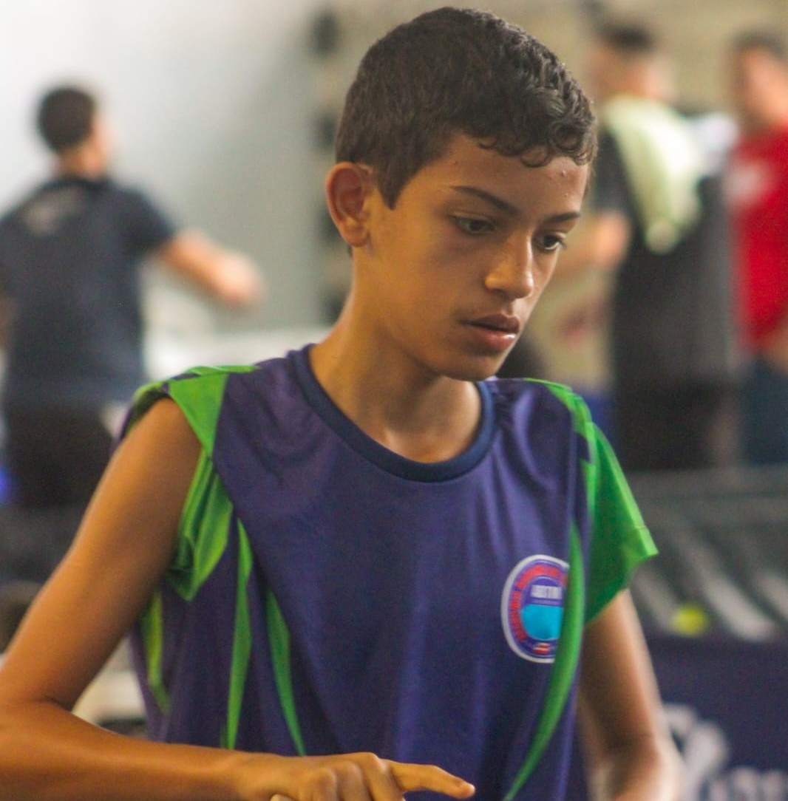

Vídeo Apresentação
Histórico
Davi Lobo Silva, 12 anos, estudante do Colégio Militar de Salvador, é um jovem atleta que une talento e determinação no tênis de mesa. Sua jornada começou cedo, e ele já demonstra grande potencial para se destacar no esporte, com um futuro promissor pela frente.
Desde os primeiros contatos com a raquete, Davi mostrou uma habilidade natural e uma paixão pelo tênis de mesa. Com disciplina nos treinos e foco nas competições, ele vem conquistando resultados expressivos em sua categoria, projetando-se como uma das grandes promessas do esporte na Bahia e no Brasil.
Títulos e Conquistas
- 2025
- 3º lugar – Copa Brasil de Tênis de Mesa Sub-13
- Vice-Campeão Sub-13 – 1ª Etapa do Campeonato Baiano
- Vice-Campeão Sub-13 – 2ª Etapa do Campeonato Baiano
- 3º lugar Sub-13 – 3ª Etapa do Campeonato Baiano
- Vice-Campeão Sub-13 – 4ª Etapa do Campeonato Baiano
- 3º lugar Sub-15 – Campeonato Baiano
- Vice-Campeão Sub-15 – Rating F
- 3º lugar Sub-15 – Rating E
- Campeão – Torneio Principiante da ABTM
- Vice-Campeão – Divisão Infantil da ETMPAN
- 3º lugar – Divisão Infantil da ETMPAN
- 3x Vice-Campeão – 3ª Divisão da ETMPAN
- Campeão – 3ª Divisão da ETMPAN
- 3º lugar – 3ª Divisão da ETMPAN
- 3º lugar – 2ª Divisão da ETMPAN


 
